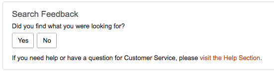
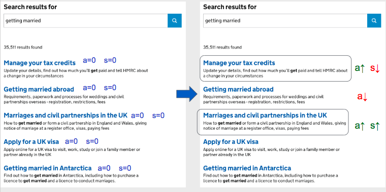

Building a tool to benchmark search: Motivation Week -1
This is the first in a series of blog posts about what I worked on for my data science accelerator project at GDS.
Recap: why did I propose this project?
GOV.UK is all about joining up goverment services and information so users can find stuff and understand goverment. This is hard because the government is not a single entity - it’s a bunch of separate departments and agencies with different priorties, responsibilities and ways of working.
GOV.UK offers a big search bar on every page. But a lot of the time it works embarassingly badly. Like when you search for a named document like “single departmental plan” and the page you want is the 20th result. Users expect stuff like this to just work, and we should do better.
Last year I was technical lead of the search team, and I came to appreciate that good search is really hard to get right. We had a ton of ideas for modifying the various factors that affect the ranking of documents in search results, but no reliable way of testing what works well and judging what’s worth spending time on. That team got wound down in January, and I had a lot of time to reflect on what could be done differently and what would enable future teams to be more productive.
We’d invested time in infrastructure for A/B testing, and manually compiling a big spreadsheet of query/document pairs to check before releasing changes. We had a tool to run through the spreadsheet queries and check which ones actually got returned in the top N results.
But it turned out that the spreadsheet-based tool wasn’t very useful, and A/B testing everything was prohibitively slow. Even for a 1 line code change, it took over a week to determine whether we’d made any measurable difference to the overall user experience. For me, this was an unacceptably long feedback cycle, and I thought that we could do a much better job if we could shorten that feedback loop.
What could we do differently?
I considered two ways of getting of feedback: editoral judgements and implicit feedback. That said, there are some methods that fall somewhere in the middle of these two approaches, like asking users to rate individual searches. This is a good example from amazon:

“Editoral judgements” means getting people to look at search results and rate how good or bad each one is. The people rating the results could be subject matter experts, or actual users participating in surveys. But either way, doing this at scale is expensive. You can’t just do it once, because content changes a lot over time, and the things people search for change as well, influenced by changes in government policy.
“Implicit feedback” means learning from what users actually do instead of what they tell us - this was appealing to me because it’s comparatively easy to scale up, and we were already collecting the data.
Problem statement
So this led me to the problem statement:
Given what people click on now, can we predict whether a new search implementation will make the user experience better or worse, for a sample set of real search queries?
Data we store
Since last year we’ve been storing search result “impressions” (which documents were shown to a user), and individual clicks as events in Google Analytics.
This data should have also been exported to Google BigQuery so we can export large datasets, but it turns out we forgot to click a button. Doh. This changed the scope of my project somewhat, as I had to work with data I gathered after starting the project instead of a full year’s worth of data. Lesson learned: check datasets as early as possible.
I only looked at search terms that had been used in at least 1000 sessions, so I ended up with a dataset containing the top 127 search terms, and about 400,000 sessions. This doesn’t represent all users very well, since there is a lot of variation in what people search for, and this ignores the “long tail” of queries that get searched less often. But it was a start.
Click models
The simplest thing to do with this data would be to just count up the number of clicks for each result, and assume that the most clicked results are the most relevant to users.
This is problematic in practice, since users are much more likely to click stuff higher up on a search result page, regardless of whether it’s good enough (“position bias”). In general, users assume the search engine is going to do its job and rank better things higher up, and only users who are very uncomfortable with technology will spend a lot of time scrolling through results before clicking something or abandoning the page.
Thankfully people have come up with lots of different models to try and understand user behaviour from what users clicked on.
For my project I used a model called the Dynamic Bayesian Network model (specifically, the Simplified Dyanmic Bayesian Network model, which adds in one more assumption to simplify the maths).
Basically this model has 2 hidden variables for each search result: how likely a document is to be clicked if it was shown in position 1, and how useful it is to a user that’s clicked it. You can use statistical methods to infer these from the click data.
The picture below shows how these variables get adjusted based on observing a session where the first and third result were clicked. You learn something about the clicked documents themselves, but you also learn about the unclicked documents that the user would have had to have seen to click something lower down.

Summary
This post has covered the motivation for the project and the data and model I used.
In the next part I’ll explain more about what I built (and what I didn’t have time for).